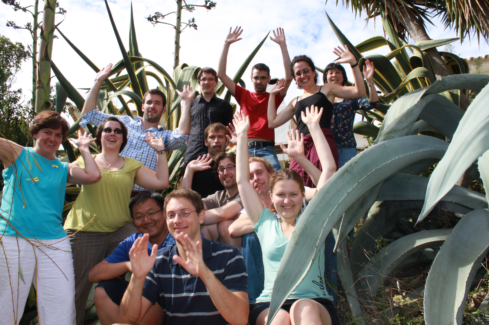

What are the relationships between chromatin features, underlying DNA sequence and gene regulation?

Source: http://www.cliffsnotes.com/assets/24452.jpg

Every BIG question needs small tools.
- ChIP-seq
- RNA-seq
- DNase-seq
- MNase-seq
- ATAC-seq

1. DNA library
2. Short reads
3. Genomic position
Solutions:
- Shrink/simplify the data so they are small enough for us to understand (e.g. peak calls, unsupervised machine learning)
- Use data visualization to make an original comprehensible to us
Scientific data visualization – is it important?
- Data visualization is prevalent approach in science
 Shaded matrix display from Loua (1873).
Shaded matrix display from Loua (1873).
- Since the advent of sequencing techniques there is great advance in methods specific to this field
- Helps us to better understand the data and find the patterns that might be lost due to shrinkage/simplification
- Great for exploratory data analyses
- Very useful for results presentation

Source: http://bedtools.readthedocs.org/en/latest/content/tools/genomecov.html


*-seq data visualization:
global approaches.

*-seq data visualization:
genome browsers.
UCSC Genome Browser

IGV (Broad Institute)

Biodalliance (Thomas Down) - live
*-seq data visualization:
multiple parts of genome, using pre-defined genomic features


Command line tools, e.g. ngsplot


Tools on Galaxy platform: deepTools, Cistrome, etc.


Why do we need yet another visualization tool?
Existing solutions did not meet our requirements:
- Custom scripts and pargramic languages labraries allows to run things in batch, but are too complicated to run for users without IT expertise
- Even with good training these tools requires a lot of time to code
- Galaxy/Cistrome was too slow and not configurable enough (plus data privacy problem!)
I want take the best from two worlds - connect the intuitiveness and interactiveness of genome browsers with visualization power of plotting 1000s of genomic features at once.
Goal: fast, intuitive software for exploratory data analyses!
SeqPlots is this software!
We developed a highly configurable, GUI operated web application for rapidly generating sets of publication quality linear plots and heatmaps.

See SeqPlots in action on the movie...
The app is available as:
- R package from Bioconductor
- Mac OS X app
- Server deployment with Shiny Server
- Web service (shinyapps.io, Amazon EC2, etc.)
Thank you!
